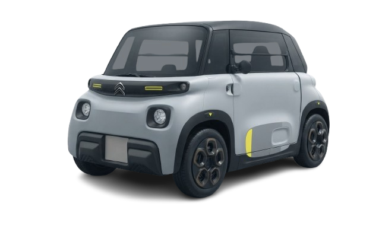

Scroll experience
Citroen Ami Tonic si trasforma in una console audio urbana.
Scorri verso il basso per avvicinarti all'auto e rivelare l'impianto audio.

scroll
Final reveal
Una microcar che diventa un sound system itinerante.
Questa è una base dimostrativa: adesso usiamo l'immagine vera della Citroen Ami Tonic, poi possiamo aggiungere speaker e portiere come immagini separate.